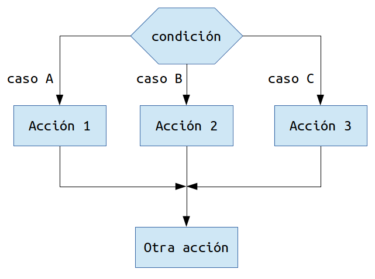

Los condicionales en Java son estructuras fundamentales que permiten ejecutar bloques de código de manera diferente según el cumplimiento de ciertas condiciones. La instrucción más básica y utilizada en este sentido es la sentencia if, que evalúa una expresión lógica y, si esta resulta verdadera, ejecuta el bloque de código asociado. Además, Java ofrece otras estructuras condicionales complementarias, como if-else, que permite definir acciones alternativas, y switch, que facilita la selección entre múltiples opciones basadas en el valor de una variable.
Estas estructuras condicionales son esenciales para crear programas dinámicos y flexibles, ya que permiten tomar decisiones en tiempo de ejecución. Gracias a ellas, los programas pueden responder a diferentes situaciones, gestionar errores, validar datos y realizar tareas específicas según las condiciones que se presenten durante su ejecución, haciendo que el comportamiento del software sea más inteligente y adaptativo.